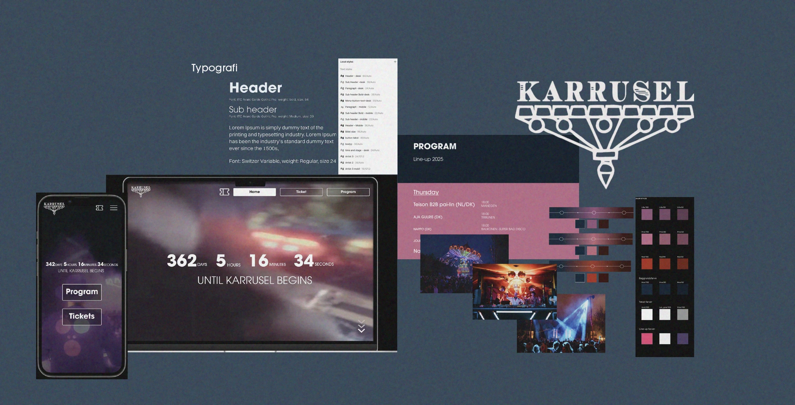
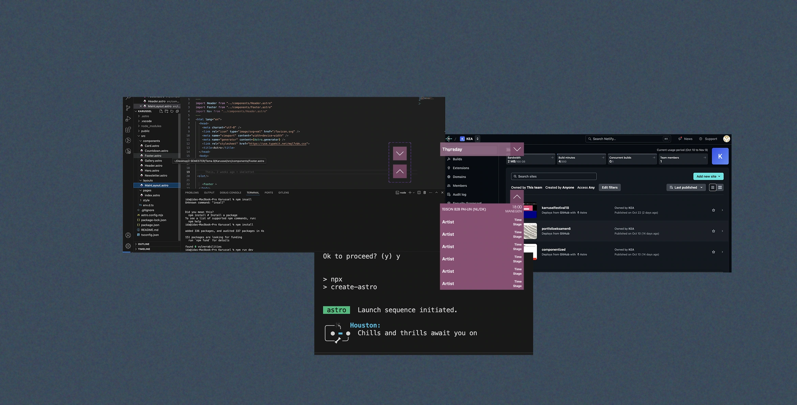
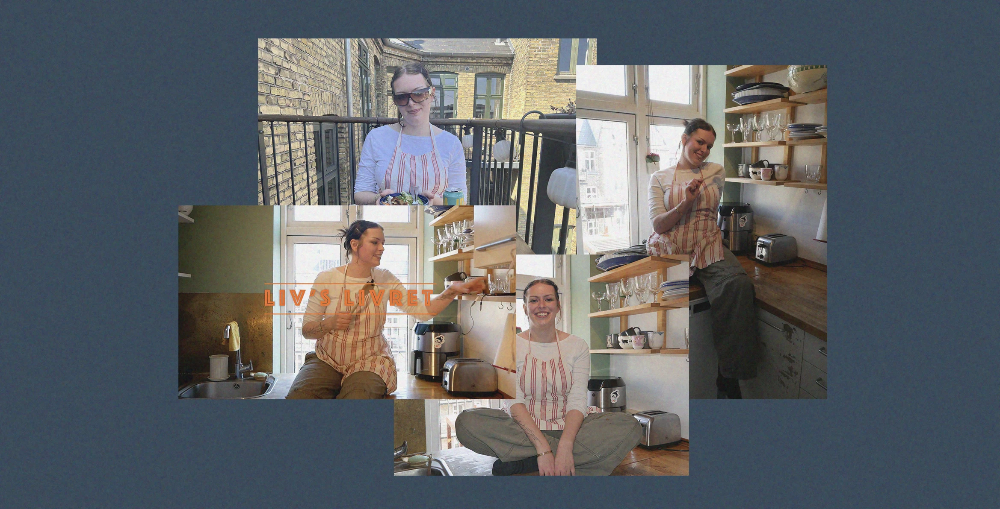
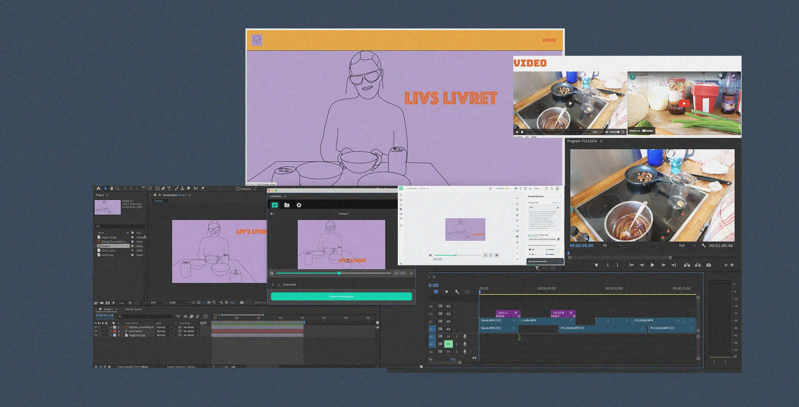
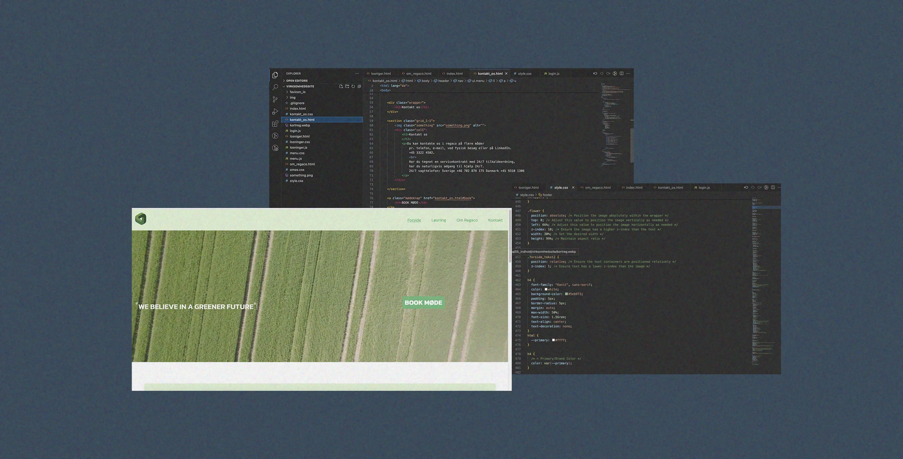
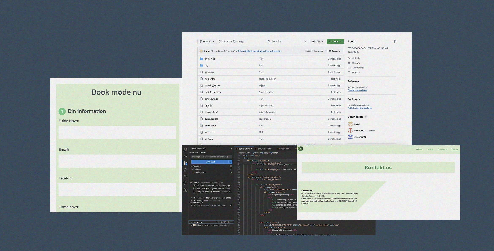
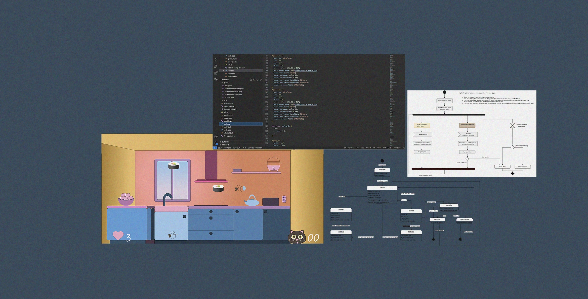
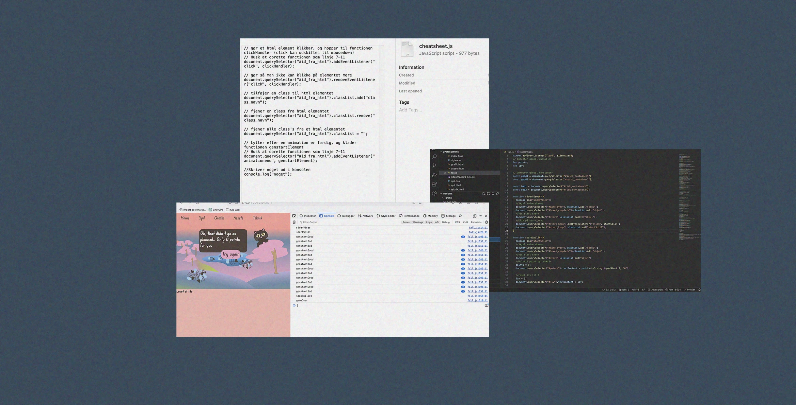
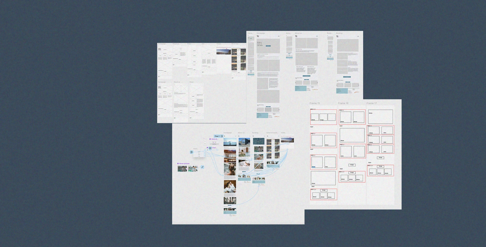
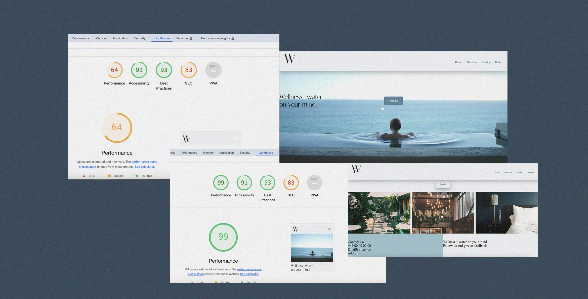

Portfolio
UX/UI second semester - Redesign of Festival website
How might we:
We conducted field research, including interviews and other testing methods, to evaluate their current website. We used "How Might We" statements to generate ideas on how we could help the company.
Creative Ideation and Prototyping with Figma:
We did ideation exercises like Crazy 8s, used Figma, and learned about prototyping, components, and booleans. We were also introduced to design systems.
Coding with the Astro Framework: Integrating Our Design System:
We used Astro framework to build web components, allowing us to seamlessly incorporate our design system directly into the code, similar to how we structured components in Figma. We got introduced to Netlify and uploaded it there.
Content Creation Essentials: From Pre- to Post-Production - Passionssite
Storyboard:
We worked with storyboarding to plan our videos. This included sketching scenes and creating a clear plan for the shoots, which helped us structure our content production.
Interview, Video and external Microfon:
Recording audio with an external microphone was an important part of the project. We conducted interviews and used microphones to capture clear and sharp sound, which enhanced the quality of our video.
Adobe Premiere Pro:
We were introduced to Adobe Premiere Pro for video editing. We learned to cut and edit our interviews, adding b-roll, replacing the audio from the main interview with external audio clips to achieve better sound quality. Adding transitions and effects, as well as adjust audio levels. We also used Adobe After Effects to create animations, which we integrated with LottieFiles.
Content Creation Essentials: From Pre- to Post-Production - Redesign of Company Website
Redesign project:
We redesigned a company's website, by using Figma to gather our research in one place where we all had access, allowing us to visually design the layouts and structure of the company's website. It was fun to collaborate on a shared project. We used Trello to organize our plan, tasks, and to-do lists.
HTML og CSS:
We implemented our design with HTML, CSS and JavaScript. We learnd how to implement forms and variables and we got introduced to Git and Github.
Git og Github:
We used GitHub to collaborate effectively on projects as a team, allowing us to code simultaneously. This was harder than we expected, and we faced several challenges with it. But we found that multiple branches and forks had been created, which were resolved with expert help by our teacher.
Animation, Designing our Own Game with JavaScript
Design in Adobe Illustrator:
We used Adobe Illustrator to design our graphic and game components. We learn how to use Illustrator tools to create vector graphic and how to implement design principles, like rule of thirds to create depth to our design. I chose a design based on the kawaii style, with soft pastel colors and a handwritten like typography to create a indbydende brugerinterface.
CSS-Animationer:
With CSS, we added movement and life to our game. By experimenting with keyframes, transitions and transform, we created different animation effects to enhance the userexperiance.
JavaScript Game Development:
We got introduced to JavaScript and how to create interactive and dynamic gaming experience. We learned how to use event listeners to create actions such as starting the game with a button click. We implemented functions to handle interactions with good and bad objects, update points and lives, and end the game upon “game over”.
UX/UI first semester - Design your own website
Research and Design choice:
We started with research and developing ideas, creating mind maps and exploring existing content on the internet to find a concept. I researched meditation, spa, hotel, and other wellness sites and ultimately chose a modern style with soft, muted colors like blue, beige, and white. The typography was elegant and easy to read, which, along with soothing images, created a calm and inviting atmosphere."
Figma and Prototyping:
We learned to use Figma to design and prototype user interfaces. Through hands-on exercises, we created low-fidelity wireframes, high-fidelity wireframes and interactive prototypes, allowing us to visualize and test our designs.
UX/UI:
We focused on userfriendly design methods and principles. By studying user behavior, conducting user research, and performing various tests such as the 5-second test, think-aloud test, BERT-test, and Lighthouse test, we ensured that our designs met the users needs and expectations.